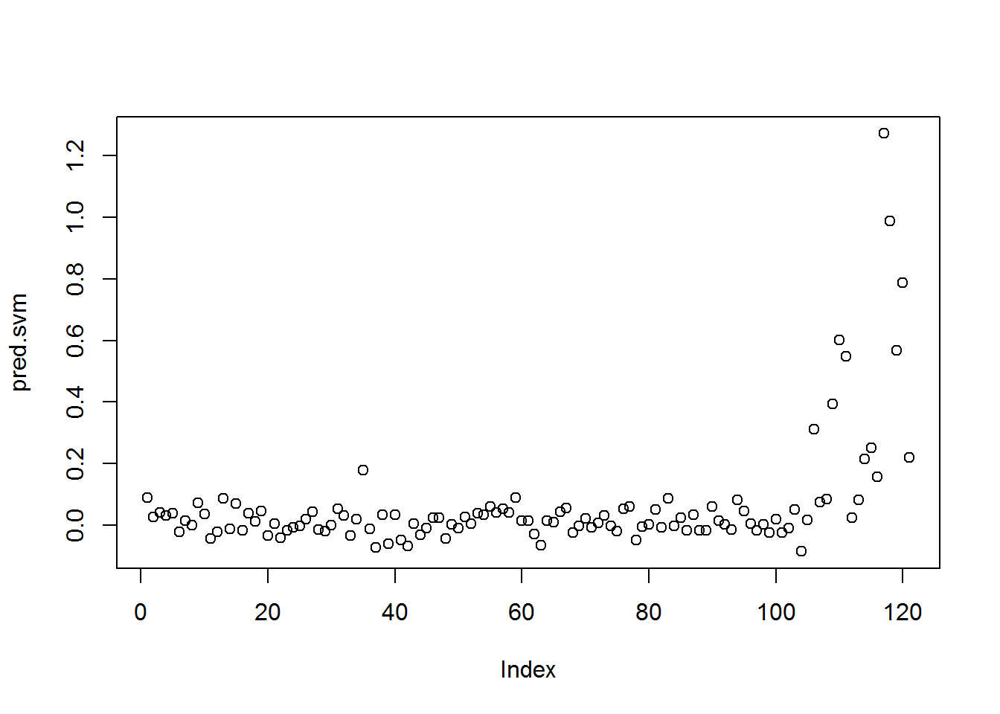
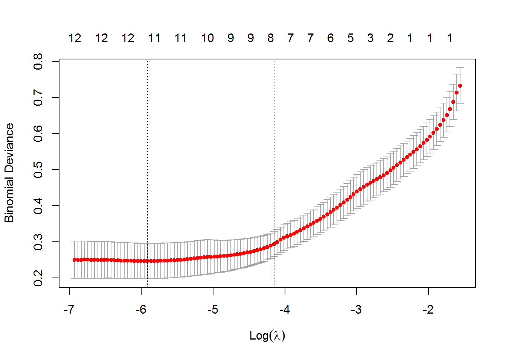
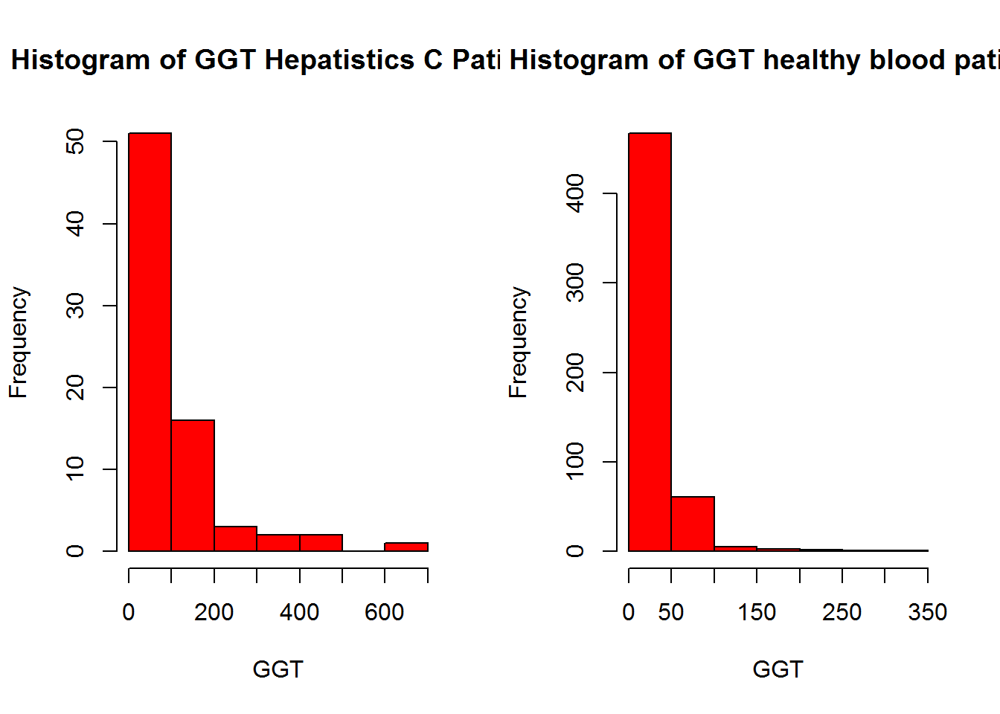
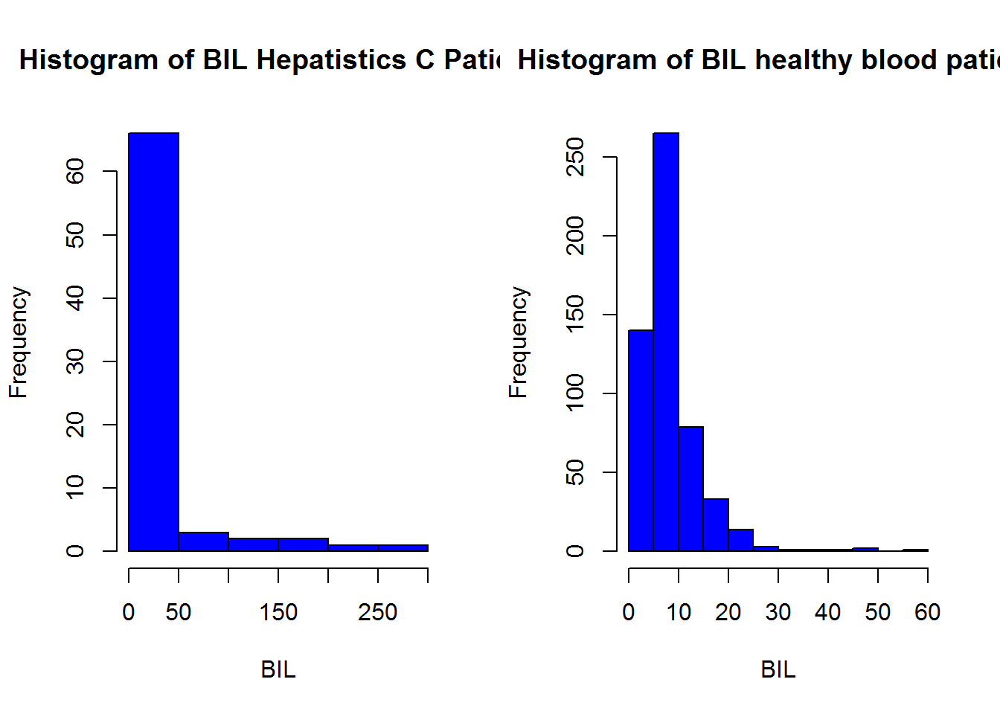

2 Exploratory Data Analysis
#note; In real world analysis, EDA will be done before handling missing values
#Import Data with Missing Values
data<-read.csv("data/CleanedData.csv",header = T,colClasses=c("NULL", rep(NA, 13))) library(ggplot2)
hepatitis = subset(data, Category==1)
healthyBlood = subset(data, Category==0)
ggplot() + geom_density(aes(x=AST), colour="red", data=hepatitis) +
geom_density(aes(x=AST), colour="Green", data=healthyBlood) +
ggtitle(" Density Plot of Category VS. AST") +
theme(plot.title = element_text(hjust = 0.5))
COMMENT From the aBove plot,we can see that,density of AST of healthy blood donors and hepatitis C pateient are positive skewed.
2.1 FINDINGS
par(mfrow=c(1,2))
hist(hepatitis$AST, col="green", xlab = "AST", main = "Histogram of AST OF Hepatistics C Patient")
hist(healthyBlood$AST, col="green", xlab = "AST", main = "Histogram of AST of healthy blood patient")
hist(hepatitis$GGT, col="red", xlab = "GGT", main = "Histogram of GGT Hepatistics C Patient")
hist(healthyBlood$GGT, col="red", xlab = "GGT", main = "Histogram of GGT healthy blood patient")
hist(hepatitis$BIL, col="blue", xlab = "BIL", main = "Histogram of BIL Hepatistics C Patient")
hist(healthyBlood$BIL, col="blue", xlab = "BIL", main = "Histogram of BIL healthy blood patient")
we can observe that,with the AST variable,the data is skewed to the hepatitis C patient with lesser values to the Healh blood patients.This observation can also be observe from GGT.
We can observe from the 3rd plot that,the largerobservations correspond to the healthy blood donors unlike the first two plots.